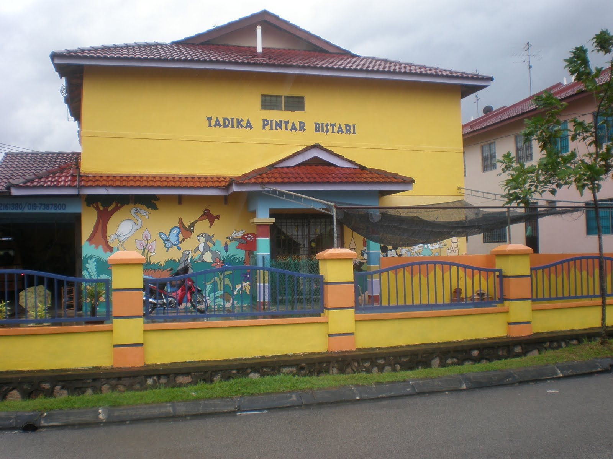
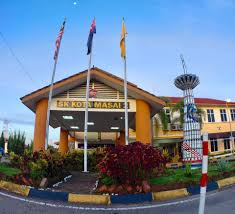
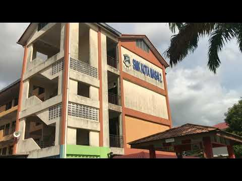

For the education part, It will be all about my education from kindergarden until univeristy
Content
Description
MY EDUCATION
Tadika Pintar Bistari
My kindergarden
SK Kota Masai 2
The school that I went for primary school
SMK Kota Masai 2
The school that I went secondary school
UiTM Dengkil
University that I went before changing my course
UiTM Segamat
University that I went now
INTRODUCING MY SCHOOLS

My Bistari Group - Tadika Pintar Bistari
This is the school that I have attend for my kindergarden, I started to attend kindergarden when I am 5 years old. This kindergarden is located at Jalan Tembikai, Taman Kota Masai. Before this, there is more than one Tadika Pintar Bistari at Jalan Tembikai, but currently there is only one and the other one have been located at another place.MyBistari Group Official Website
Achievement/Position/Partcipication
Third Place in class for two time
Participate in the singing competition

Sekolah Kebangsaan Kota Masai 2
This is my primary school. This school is located at Jalan Tembikai, Taman Kota Masai. There are more than one primary school that located in taman kota masai, but this school is the nearest to my house. I have been appointed as the prefect by the class teacher when on my second year at the school. I have been the prefect for four years from year 2 until 5.SK Kota Masai 2 Facebook
Achivement/ Positiion/ Partcipication
Prefect for 4 consutive years, from 8 years old until 11 years old
UPSR: 2A 2B 1C
My Classes...
1A2
2A4
3A3
4A2
5A2
6A3

Sekolah Menengah Kebangsaan Kota Masai 2
I have attended this school for my secondary school. This school is located in Jalan Tembikai, Taman Kota Masai side by side with SK Kota Masai 2. I am an ordinary students from form 1 until 4, but when I am in my form 5 I became library prefect and also been appointed as the secretary for the geography club. I also won a notable award when I am attending this school, which is full attendance for each year and second place speaking in rhythmic regional rankings and I also won first prize in marching competition between sports houses at the school level. SMK Kota Masai 2 Facebook
Achievement/Position/Partcipication
Library Prefect for 1 year, at 17 years old
Secretery for Geography Club for 1 year on 2020
One of the participants in the Olimpiad Matematik Kebangsaan in Universiti Teknologi Malaysia (UTM)
Second place in rhythmic speaking contest in district level
First place in parade competition in Kejohanan Olaharaga Sekolah 2016
Excellent attendance level for 4 Dedikasi
Participant in program Target A Sains in 2020
SPM: 7A 1B 1C
My Classes...
1 Dedikasi
2 Amanah
3 Bijak
4 Dedikasi
5 Dedikasi
Universiti Teknologi Mara, Dengkil
I only attend this univeristy for 6 month, which is 1 semester and I took Asasi in Law in this university in 2021 until 2022UiTM Dengkil, Selangor